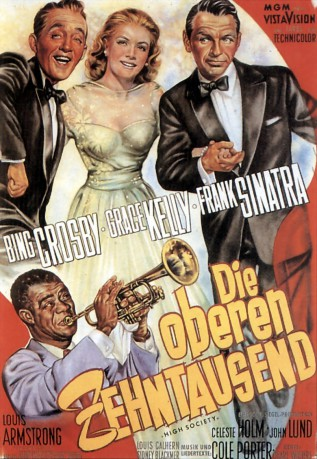

#11229 Die Oberen Zehntausend
Alternativ: High Society (Englischer Titel)
Auszeichnungen: für 2 Oscars nominiert
 
 IMDB-Wertung: 7.0 / 10
IMDB-Wertung: 7.0 / 10  Metascore: 0
Metascore: 0 
Basierend auf dem Stück The Philadelphia Story erzählt das Musical Die oberen Zehntausend aus dem Jahre 1956 die Geschichte eines erfolgreichen Jazz-Musikers, der nach Rhode Island in sein Haus zurückkehrt, wo er seine Ex-Frau Tracy wiedertrifft, die kurz vor ihrer zweiten Hochzeit steht.
Jahr: 1956
Dauer: 102 Minuten
FSK: 16
Land: USA Studio: MGMTonspuren: DD5.1 - ,
Untertitel:
Auflösung: 720p (1280x800) Größe: 3430 MB
Genre: Komödie, Liebe, Musical
Regisseur: Charles Walters
Drehbuch: John Patrick, Philip Barry
Soundtrack: Cole Porter, Johnny Green, Conrad Salinger
Darsteller:
 Bing Crosby als C. K. Dexter-Haven
Bing Crosby als C. K. Dexter-Haven Grace Kelly als Tracy Lord
Grace Kelly als Tracy Lord Frank Sinatra als Mike Connor
Frank Sinatra als Mike Connor- Celeste Holm als Liz Imbrie
- John Lund als George Kittredge
- Louis Calhern als Uncle Willie
- Sidney Blackmer als Seth Lord
- Louis Armstrong als Louis Armstrong
- Margalo Gillmore als Mrs. Seth Lord
- Lydia Reed als Caroline Lord
 Richard Garrick als Lords' Butler
Richard Garrick als Lords' Butler Don Anderson als Party Guest (uncredited)
Don Anderson als Party Guest (uncredited) Steve Carruthers als Party Guest (uncredited)
Steve Carruthers als Party Guest (uncredited) Gene Coogan als Party Guest (uncredited)
Gene Coogan als Party Guest (uncredited)- Barrett Deems als Louis' Drummer (uncredited)
 Franklyn Farnum als Party Guest (uncredited)
Franklyn Farnum als Party Guest (uncredited) James Gonzalez als Party Guest (uncredited)
James Gonzalez als Party Guest (uncredited)- Edmond Hall als Louis' Clarinetist (uncredited)
 Stuart Holmes als Party Guest (uncredited)
Stuart Holmes als Party Guest (uncredited)- Paul Keast als Editor (uncredited)
- Richard Keene als Mac (uncredited)
- Billy Kyle als Louis' Pianist (uncredited)
 Philo McCullough als Party Guest (uncredited)
Philo McCullough als Party Guest (uncredited) Harold Miller als Party Guest (uncredited)
Harold Miller als Party Guest (uncredited) Monty O'Grady als Party Guest (uncredited)
Monty O'Grady als Party Guest (uncredited) Leoda Richards als Party Guest (uncredited)
Leoda Richards als Party Guest (uncredited) Jeffrey Sayre als Party Guest (uncredited)
Jeffrey Sayre als Party Guest (uncredited) Scott Seaton als Party Guest (uncredited)
Scott Seaton als Party Guest (uncredited)- Arvell Shaw als Louis' Bassist (uncredited)
- James Young als Louis' Trombonist (uncredited)
- Gordon Richards als Dexter-Haven's Butler
- Louis Armstrong and His Band als Themselves
- Hugh Boswell als The Parson (uncredited)
- Paul Bradley als Party Guest (uncredited)
- Beulah Christian als Party Guest (uncredited)
- Paul Cristo als Party Guest (uncredited)
- William Duray als Party Guest (uncredited)
- Shep Houghton als Party Guest (uncredited)
- Ruth Lee als Ruth - Jazz Festival Organizer (uncredited)
- Thomas Martin als Waiter (uncredited)
- Hans Moebus als Party Guest (uncredited)
- Murray Pollack als Party Guest (uncredited)
- Paul Power als Party Guest (uncredited)
- Victor Romito als Party Guest (uncredited)
- Reginald Simpson als Lawrence - Uncle Willie's Butler (uncredited)
- Helen Spring als Helen - Jazz Festival Organizer (uncredited)
- Florence Wix als Party Guest (uncredited)
Datei: X:\1950-1959\Oberen Zehntausend, Die (1956, FSK16, 1280x800).mkv seit 20.05.2019
Festplatte: Gemischt-01+Anime
 Es gibt insgesamt 141 Filme in der Gruppe '1950-1959'
Es gibt insgesamt 141 Filme in der Gruppe '1950-1959'